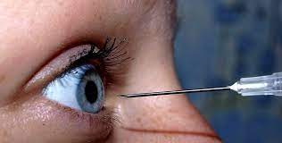

Students Blinded in 'Pirate' TikTok Challenge
By Vitreous Humorist
Respect-seeking students are turning a blind eye to self-care in the latest TikTok challenge, sticking needles in their eyes or asking their friends to do it for them. The self-mutillations began after a school crackdown on the previous 'Devious Licks' bathroom-defacement challenge.
"Stealing our own soap? That's just stupid!" said Salvador Dali, inventor of the Pirate challenge. "Why spread germs onto friends just to get likes on social media? People who did that had no friends, that's why. They risked nothing!"
Dali claims that most TikTok challenges are really just cries for attention and temporary respect from insecure teenagers. "Nobody remembers you tomorrow when all you do is steal soap," he said in an interview with The Renagade.
The new TikTok star (pictured at left with a customized eye patch) has a point. Recent studies show that Instagram causes teenagers who are already insecure about their bodies or popularity to feel much worse, developing anxiety and depression. See Instagram is even worse than we thought for kids. What do we do about it? (NY Times, September 17, 2021).
According to Dali, earning lasting respect requires building and maintaining healthy relationships, and behaving in ways that merit respect and connection. But some students are just not mature enough for that, he says.
"Everyone needs friends," says Dali. "But some just don't have the right stuff. What TikTok showed me is that you need to do something REALLY daring, and permanent, to build bonds that last. That's why I cut open my eye on TikTok. Now I'm a real renegade. And my black eye patch matches our school colors, too!"
It takes a great deal of self-control and determination to stick a needle in your own eye, or slice it open with a knife, Dali admits. "I don't think there's another kid at Renaissance who could do that. But even if you have a friend do it for you, you still wear the badge of honor yourself."
Dali considers himself a filmmaker as well as a performance artist and TikTok star. His first video, when he blinded himself, was removed from TikTok for inappropriate content. But he kept the one where he blinds his girlfriend from getting blocked.
Does blinding your eye limit what you can see, and narrow your life options? "No way," said Dali. "I always had to close one eye to look into a camera, so now that's easier. The art teacher says we need two eyes for perspective, but that's obviously wrong. Watch my sister ride off on a bike after I finish cutting her eye! You need depth perception to ride a bike.
So far, no other students have taken the 'Pirate' challenge. While eye patches cannot be excluded as uniform violations due to their medical purpose, a unified all-grades student council will convene next week to decide whether red bandana hats should be allowed.